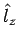

Inhalt Index DeskTop Bronstein

 Algebra und Diskrete Mathematik Klassische algebraische Strukturen Darstellungen halbeinfacher Lie-Gruppen
Algebra und Diskrete Mathematik Klassische algebraische Strukturen Darstellungen halbeinfacher Lie-Gruppen


Gemäß (5.145) spannen die Komponenten des Bahndrehimpulsoperators die LIE-Algebra so(3) der Drehgruppe SO(3) auf, so daß sich eine Funktion bei infinitesimalen Drehungen mit dem Winkel  um die z-Achse gemäß
um die z-Achse gemäß
| (5.162) |
transformiert. Da alle infinitesimalen Generatoren nicht untereinander kommutieren,
| (5.163) |
erhält man für den Rang von so(3) den Wert , d.h., in so(3) kann eine Basis so gewählt werden, daß höchstens einer der drei Generatoren durch eine Diagonalmatrix dargestellt wird. Als Standardbasis wird im allgemeinen
| (5.164) |
eingeführt, wobei die Leiteroperatoren sind.
Nach dieser Basistransformation gelten für die Elemente der neuen Basis
Der Raum, in dem die Wurzeln und Gewichte der LIE-Algebra so(3) dargestellt werden können, ist eindimensional . Gemäß (5.165a) besteht das System der Wurzelvektoren aus .
Die Gewichte m der inäquivalenten irreduziblen Darstellungen von so(3) (und damit von SO(3)) sind ganzzahlig und unterscheiden sich um 1. Das höchste Gewicht einer irreduziblen Darstellung von so(3) sei , der zugehörige Eigenvektor wird mit bezeichnet. Die Eigenvektoren zu möglichen anderen Gewichten erhält man durch sukzessive Anwendung des Leiteroperators E- auf bis der Eigenvektor zu m =-l erreicht ist . In jedem Schritt wird das Gewicht gemäß (5.161) reduziert von m auf . Das Gewichtsdiagramm einer irreduziblen Darstellung Dl von SO(3) mit dem höchsten Gewicht besteht also aus allen Punkten auf der Zahlengeraden (s. obige Abbildung).
Die Darstellung ist damit 2l+1-dimensional. Die Basisvektoren im Darstellungsraum sind die Eigenfunktionen des Operators  der z-Komponente des Bahndrehimpulses zum Eigenwert  ,
,
| (5.166) |
so daß die Gewichte m der irreduziblen Darstellung von SO(3) physikalisch die möglichen Meßwerte für die Projektion des Bahndrehimpulses auf die Quantisierungsachse (z-Achse) bedeuten (Richtungsquantelung). Da der CASIMIR-Operator mit allen Generatoren kommutiert,
| (5.167) |
sind die Funktionen auch Eigenfunktionen zum Quadrat des Drehimpulsoperators. Die Eigenwerte sind :
| (5.168) |
Die Zahl , die die irreduzible Darstellung von SO(3) spezifiziert, legt also noch den Betrag des Drehimpulses fest.
Bei endlichen dreidimensionalen Drehungen um die EULERschen Winkel transformieren sich die Funktionen untereinander gemäß
| (5.169) |